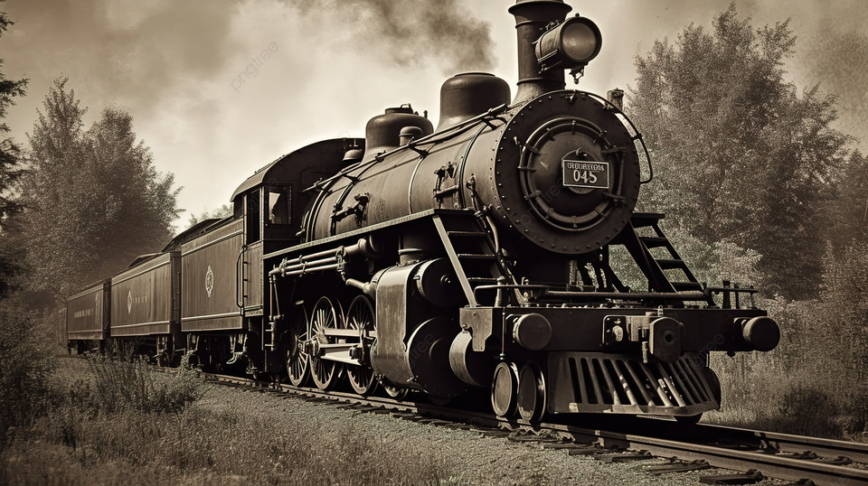
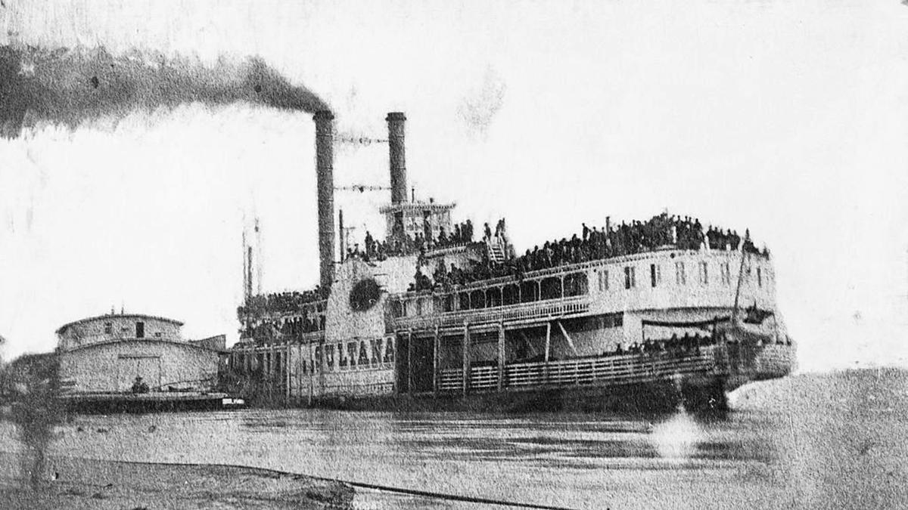
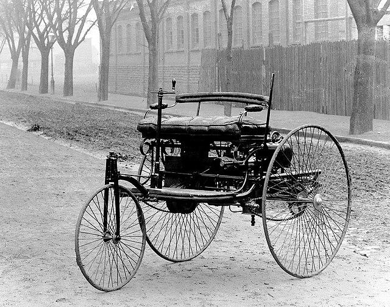

"Transportation in the Industrial Revolution Era"
Transportasi di Era Revolusi Industri
Menurut Kumparan.com, Revolusi Industri adalahsalah satu wujud perubahan di bidang teknologi yang memberi pengaruh besar bagi banyak sektor
kehidupan masyarakat. Begitu pula dengan kegiatan transportasi. Selain itu, mengutip dari buku Pengembangan Revolusi Industri 4.0 dalam Berbagai Bidang, Nurdianita Fonna (2019:9),
pengertian Revolusi Industri adalah suatu perubahan yang berlangsung cepat dalam pelaksanaan proses produksi, di mana yang semua pekerjaan proses produksi itu dikerjakan oleh manusia
digantikan oleh mesin, sedangkan barang yang diproduksi mempunyai nilai tambah (value added) yang komersial.
Pada saat Revolusi Industri ini, banyak memberikan sisi positif dan manfaatnya. Apalagi di bidang transportasi.Selain itu, ada 3 contoh transportasi di era Revolusi Industri yang akan dibahas diantaranya:
- Dilansir dari detik.com, Kereta Uap merupakan kereta api pertamayang ditemukan pada awal tahun 1800-an. Sebelum ditemukannya lokomotif uap, kereta
gerobak yang digerakkan oleh manusia atau ditarik oleh kuda menjadi sejarah awalpenemuan kereta api. Contoh awal gerbong kereta ini diketahui sudah ada sejak
milenium ke-2 dan ke-1 SM.Jalur gerobak ini ditemukan di dekat situs bersejarahAsyur, Babilonia, dan Persia. Selama periode tersebut, jalur kereta gerobak ini
digunakan untuk menghubungkan pos perdagangan atau membawa batu tambang ke lokasikonstruksi. Kereta ini tidak digunakan sebagai alat transportasi umum.

Klik pada gambar untuk info selengkapnya
- Dilansir dari study.com,Kapal Uap merupakan penemuan penting yang dikembangkan selama Revolusi Industri untuk meningkatkan perdagangan dan
transportasi manusia, terutama di sepanjang sungai dan laut. Kapal Uap ditemukandi Amerika Serikat oleh Robert Fulton yang menggunakan kombinasi
beberapa penemuam dan konsep yang telah dikembangkan sebelumnya. Kapal uap pertama yang layak secara ekonomi, CLERMONT, diciptakan oleh Robert Fulton di New York
City. Kapal ini dibuat pada tahun 1807, dan pada bulan Agustus tahun itu, demonstrasi publik pertama kapal tersebut dilakukan. Kapal uap pertama yang
digunakan secara luas di Amerika diciptakan pada tahun 1807. Setelah kapal uap pertama diciptakan, kapal tersebut digunakan secara luas di seluruh Amerika
Serikat hingga akhir abad ke-19.

Klik pada gambar untuk info selengkapnya
- Karl Benz mulai menemukan mobil berawal pada tahun 1878, waktu itu ia berhasil menciptakan mobil pertama yang dinamai dengan namanya juga yakni Benz
Patent Motorwagen. Mobil karya Karl Benz pertama ini tidak dilengkapi dengan gigi atau perseneling sehingga kerap kali saat dilakukan uji coba sangat susah
untuk dikontrol dan akhirnya sering menabrak tembok pembatas. Hal itu pun membuat publik takut untuk mencoba mobil tersebut. Di era yang sama, penemu mobil dengan
bahan bakar bensin selain Karl Benz yaitu Gottlieb Daimler dan Wilhelm Maybach dari Stuttgart, Jerman juga melakukan pengembangan proyek mobil yang hampir sama
dengan proyek mobil Karl Benz. Mereka hanya kalah cepat dengan Benz yang lebih dulu menyelesaikan proyeknya dan mendapatkan hak paten atas penemuan mobil bertenaga mesinnya pada tahun 1879.

Klik pada gambar untuk info selengkapnya